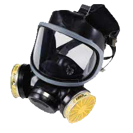
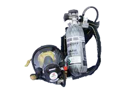
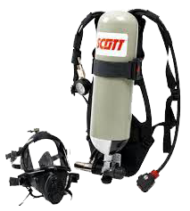
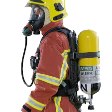
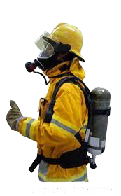

Once the presence of H2S is detected in the atmosphere, the immediate response action to take is to protect oneself and avoid breathing the contaminated air by donning a breathing apparatus. As soon as the worker is personally protected, essential employees will be expected to remain in the H2S contaminated areas to do the procedure required to control the H2S release and to rescue any victims. The remaining personnel should escape to the designated safe briefing area.
There are two main types of respiratory protection that you can use at the job site
The Supplied Air Breathing Apparatus (SABA) and Self Contained Breathing Apparatus (SCBA).
Air Purifying Respirator – APR

The unit filters or absorbs the contaminated air through the canister or cartridge prior to circulating the air into the worker's respiratory system.
APR normally works under negative pressure. The unit is not commonly used as respiratory protection due to its limited purpose application, such as :
APR are selective and only protect the workers from specific substance
APR cannot be used in to purify contaminated air that contains more than the threshold limit value according to NIOSH and/or manufacturer's recommendation.
The Contaminant material must be identified.
Supplied Air Breathing Apparatus ( SABA )
SABA Consist of the following component :

1. Air supply : Air supply quality must conform to international standards (ie., NIOSH and OSHA standards). Air can be supplied from a breathing air compressor, but usually it is supplied from a cascade of cylinders connected or "pig-tailed" together. The air is then sent through a regulator to a manifold, from which several hose lines are extended. Each hose terminates with a breathing apparatus, which consists of a face-piece and a sealed hose to obtain maximum use of the air supply.
2. Air pressure regulator : Air pressure is reduced and controlled by regulators at one or more locations. The regulators control the supply and pressure of the air to the face-piece.
3. Air exhaust : Exhaled air is vented directly into the atmosphere through an exhalation valve in the mask of the face-piece.
4. Egress cylinder : When using SABA units in atmospheres with dangerous levels of gas concentration, you must have, egress cylinder. This cylinder will give you a supply of air to allow you to get out of the hazardous area in the event of the hose becomes tangled or cut, or your air supply's shut-off in some way. The egress cylinder must contain enough air to allow you get out of the hazard area. 5 minute air supply is standard.
Self Contained Breathing Apparatus (SCBA)
SCBAs are composed of various parts grouped into 4 categories :
Air supply : All units supply compressed air from a portable cylinder worn by the user. Supply is controlled by the user through a diaphragm in the regulator. Air travels from the cylinder to the regulator through a high pressure hose. The regulator reduces the air pressure delivered to the face-piece. During use the mainline valve should be fully open. When there is approximately 1/4 of the air left in the cylinder an audible alarm will sound.
There will be about five (5) minutes of air supply remaining. Be sure that there is enough air to get out of the contaminated area. This is critical since the maximum capacity of most cylinders is only 30 minutes. The time duration of the air supply is affected by the breathing rate of the user, which in turn is affected by physical size and condition, the physical effort required, training and experience, mental and emotional state, and the amount of air in the cylinder.
Face-piece : This component consists of a head strap, breathing tube, exhalation valve, and face-shield. The seal on the face-shield is very important as it protects the user from inhaling H2S. The seal will only function effectively if the user has no facial hair (clean shaven), the head strap is properly adjusted, and the user is not using eyewear with temple piece passing under the face-piece seal. Special eyewear is available to be used inside the face-piece. Distinct facial shapes can also prevent an effective seal. The face-piece must be fit-tested, in a save environment, to each user face.
Harness : The key to SCBA equipment is portability. There may be differences in harness styles depending on the brand, but their purpose is the same : to support the cylinder and connect it through the regulator to the face-piece.
Regulator : This component controls the flow of air to the face-piece When the user inhales, air is released from the cylinder. The cylinder contains compressed air, the regulator supplies air to the face-piece at the pressure slightly above atmospheric pressure to prevent any inward leakage. When the user stops inhaling, the regulator shuts off the flow of air until the next inhalation. In case of emergency, there is a by-pass valve to permit a continuous stream of air to enter the face-piece. If there is sufficient air in the cylinder, this will allow enough time for the user to get to a safe area.
There are three categories of SCBA equipment
Escape unit
Work unit
Rescue unit.
Escape Unit
These units are located near work stations and accommodations areas. They have a small self-contained air supply and are designed to provide sufficient air for about 5 to 15 minutes. The escape unit is used only for evacuation from a hazardous area and not for entering and, or working at the hazardous. These units are located near work stations and accommodations areas. They have a small self-contained air supply and are designed to provide sufficient air for about 5 to 15 minutes. The escape unit is used only for evacuation from a hazardous area and not for entering and/or working at the hazardous area.

Work Unit
This unit is used for working in toxic atmosphere immediately dangerous to life or health. This unit consists of a 5 to 15 minutes egress cylinder, with a quick coupling air line connection to a continuous air supply (for example, an air bank of 300 cuft Cylinder) In case of emergency, the hose can be disconnected and the egress cylinder contains enough air for the user to escape and leave the hazardous area. This equipment is suitable for use in a life threatening environment.

Rescue Unit
Users should become familiar with how to operate the various breathing apparatus available as improper use can result in serious injury or death.
The rescue unit provides 30 to 60 minutes of air. This apparatus provides the user with respiratory protection while performing work or rescue in environments immediately dangerous to life and health. The unit's regulator is equipped with an alarm, which will sound when there is approximately 25 % of air left in the cylinder. Leave immediately for a safe breathing environment when the low-pressure alarm sounds.
Eye glasses should not be wear with a face mask because the temple will prevent a facial seal around the mask. Similarly facial hair could cause an improper face seal. Contact lens should not be wear either as small particles accumulated in the face mask before putting the unit on can blow into the eyes during use, causing severe discomfort.
